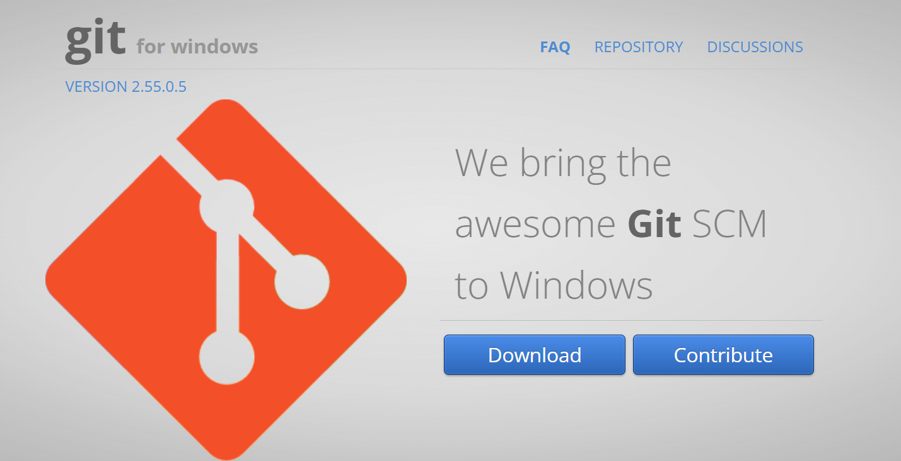
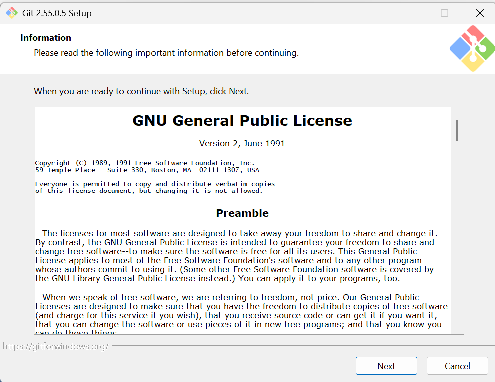
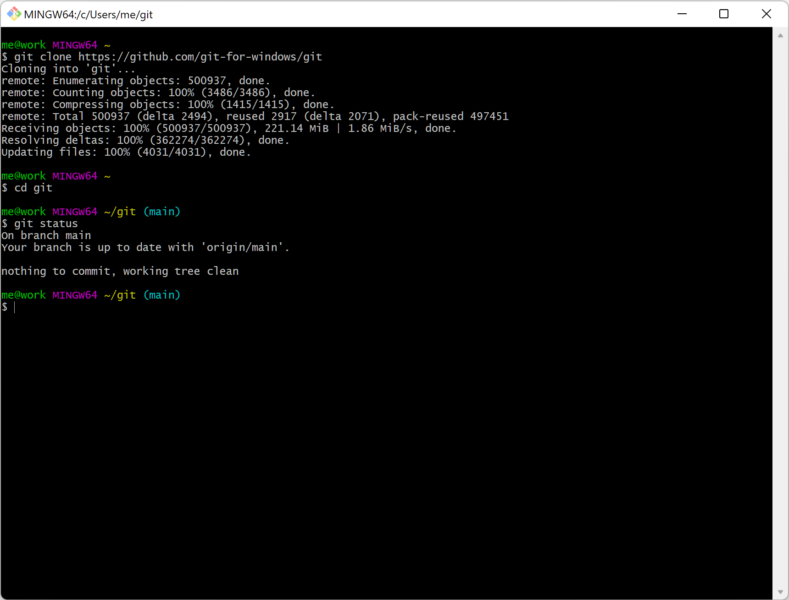

Installere Git Bash#
Git Bash er et kommandolinjeprogram for Windows som inneholder Git og Bash. Bash står for Bourne Again Shell og gir tilgang til en rekke kommandoer som brukes til filhåndtering, programmering og versjonskontroll med Git.
Hvis du allerede har Git installert, kan du sjekke om Git Bash er tilgjengelig ved å søke etter Git Bash i Start-menyen. Hvis Git Bash ikke finnes, installer eller oppdater Git for Windows fra https://gitforwindows.org/, se Fig. Fig. 3. Da får du både Git og Git Bash.
{kind=link}

Fig. 3 Første steg i installasjonen av Git for Windows.#
Klikk på Download, som laster ned installasjonsveiviseren.
GNU lisens#
Bash er et kommandolinjegrensesnitt (Command Line Interface - CLI) som ble laget i 1989 av Brian Fox som en fri programvare-erstatning for Bourne Shell. Bash ble utviklet som en del av GNU’s not unix (GNU)-prosjektet startet av Richard Stallman i 1983 for å utvikle fri programvare.
Installasjonsveiviseren for Git for Windows viser lisensvilkårene til GNU General Public Licence, i Fig. Fig. 4. Etter å ha gjennomgått informasjonen kan du fortsette ved å klikke Next.
{kind=link}

Fig. 4 Installasjonsveiviseren for Git#
CLI er en måte å bruke et program på ved å skrive kommandoer i et tekstvindu i stedet for å klikke på knapper og menyer. I Fig. Fig. 5 er et eksempel på kommandoer brukt i Git Bash. Målet var å lage en gratis og fritt tilgjengelig versjon av den opprinnelige Bourne Shell, den klassiske Unix-skallen (sh) utviklet av Stephen Bourne på 1970-tallet.
{kind=link}

Fig. 5 Eksempel på kommandolinjegrensesnitt#
Kuriositet: GNU og Linux#
Målet var å bygge et komplett operativsystem, men GNU manglet én sentral komponent: kjernen (kernel).
I 1991 utviklet Linus Torvalds Linux-kjernen. Da kunne GNU-verktøyene kombineres med Linux-kjernen, og resultatet ble det vi i dag vanligvis kaller Linux.
Linux-kjernen ble utviklet av Linus Torvalds i 1991 og har pingvinen Tux (Torvalds UniX) som maskot, i Fig. Fig. 6. Sammen med verktøy fra GNU-prosjektet danner Linux-kjernen grunnlaget for de fleste moderne Linux-distribusjoner.

Fig. 6 Tux, Linux-maskoten. Illustrasjon basert på originaldesignet til Larry Ewing (1996), tilgjengelig via Wikimedia Commons.#
1. Last ned Git for Windows#
Gå til:
eller:
3. Start Git Bash#
Etter installasjonen kan du:
åpne Git Bash fra Start-menyen, eller
høyreklikke i en mappe og velge Open Git Bash Here.
4. Test installasjonen#
Skriv:
git --version
Eksempel på utskrift:
git version 2.51.0.windows.1
6. Klon et repo#
git clone https://github.com/bruker/repo.git
7. Oppdater et repo#
Hva gjør git pull?#
Kommandoen
git pull
henter de nyeste endringene fra GitHub og oppdaterer den lokale kopien av repoet.
Denne kommandoen brukes når andre har lagt til eller oppdatert filer i repoet, for eksempel nye datasett eller øvingsfiler.
For dette emnet er det i hovedsak disse to kommandoene som brukes:
git clone
git pull
Opprette et Git-repo i Git Bash#
1. Gå til ønsket mappe#
cd /c/repos
2. Opprett en ny mappe#
mkdir power-system-data
3. Gå inn i mappen#
cd power-system-data
4. Opprett Git-repo#
git init
Du får en melding som ligner:
Initialized empty Git repository
5. Opprett en README-fil#
echo "# Power System Data" > README.md
6. Legg filen til Git#
git add README.md
7. Lag første commit#
git commit -m "Initial commit"
8. Koble til GitHub (valgfritt)#
Opprett først et tomt repository på GitHub, og koble deretter til:
git remote add origin https://github.com/brukernavn/power-system-data.git
9. Last opp til GitHub#
git branch -M main
git push -u origin main
Nyttige kommandoer#
Vis status:
git status
Legg til alle endringer:
git add .
Lag commit:
git commit -m "Beskrivelse av endringen"
Last opp til GitHub:
git push
Hent siste endringer:
git pull